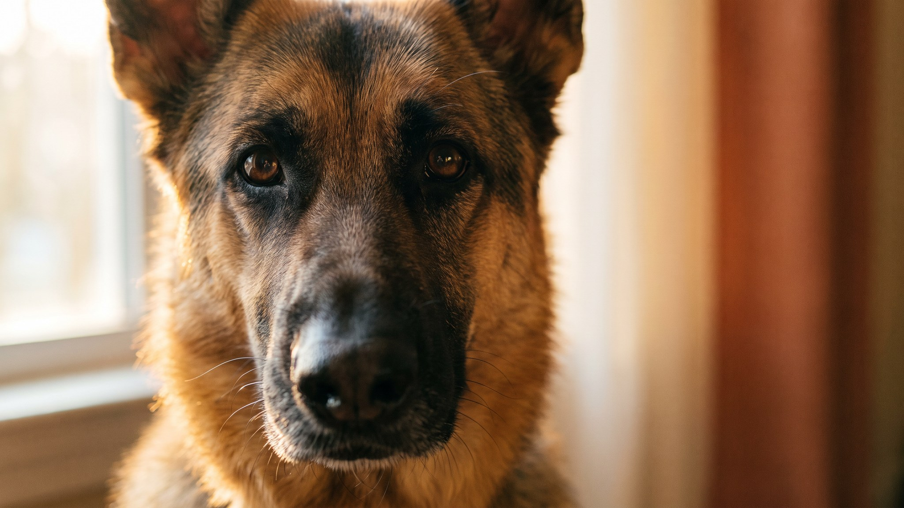

Саамы тысячи лет пасли оленей в Лапландии, и финский лаппхунд работал рядом: мягко собирал стадо, реагировал на сигнал голосом, держал контакт с человеком в мороз. Эта история объясняет многое в характере породы: сообразительный, дружелюбный, очень привязчивый и при этом самостоятельный. Ниже разбираем, что из этого ждёт будущего владельца дома.
🐾 Ваш питомец — финский лаппхунд?
Заведите профиль в AnimaLife: приложение запомнит породу, возраст и вес и будет подсказывать по уходу именно для неё. Вопросы AI-ветеринару — круглосуточно и бесплатно.
Завести профиль → Завести в MAX →
У вас iPhone? AnimaLife есть в App Store
Финский лаппхунд, или финская лопарская собака, веками жил в Лапландии у народа саамов. Его использовали как оленегонную овчарку: пёс собирал стадо, отгонял незваных гостей и ночевал рядом с хозяином под открытым северным небом. В середине XX века породу стандартизировали и официально зарегистрировали в Финляндии. Сегодня это популярная семейная собака, хорошо известная в Скандинавии, но редкая в России.
Финский лаппхунд дружелюбен ко всем: к детям, гостям, другим собакам. Агрессия нетипична для породы. При этом он чувствительный: давите или кричите, пёс просто закроется. Учат его мягко, последовательно, с мотивацией.
Отдельная особенность: финский лаппхунд лает коротким сигнальным лаем, как делал на пастбище. Гость в прихожей, кот за окном, незнакомый звук, все это повод подать голос. Социализируйте щенка рано: собаки, прошедшие через разные ситуации в детстве, лают меньше. Совсем тихого пса из этой породы всё равно не выйдет.
Это рабочая собака, которой нужно двигаться каждый день. Финскому лаппхунду нужны длительные прогулки с возможностью бегать и обнюхивать. Голова тоже должна работать: поисковые игры (нос-работа), апортировка, учёба новым командам.
Шерсть двойная: плотный мягкий подшёрсток и более жёсткая внешняя. В обычный период достаточно вычёсывания раз в неделю. Два раза в год, весной и осенью, лаппхунд «сбрасывает» подшёрсток: несколько недель шерсть идёт клочьями, нужно вычёсывать каждый день.
Холод порода переносит отлично, Лапландия в её природе. Жара тяжелее: в летний зной прогулки лучше планировать на утро и вечер, следить за водой и тенью. Купать нужно редко, по необходимости: шуба хорошо самоочищается.
По здоровью: финский лаппхунд в целом крепкий. Раз в год показывайте питомца ветеринару, следите за весом и физической формой. На плановом осмотре скажите врачу проверить глаза и суставы, особенно когда собаке за семь.
🐾 У вас финский лаппхунд?
AnimaLife соберёт уход под породу: к каким болезням есть склонность, что проверять по возрасту, чем кормить и когда пора к врачу. Бесплатно, прямо в мессенджере.
Собрать план ухода → Собрать в MAX →
У вас iPhone? AnimaLife есть в App Store
🐾 Понравился разбор?
Подпишитесь на канал — каждый день разбираем по одному тревожному симптому у кошек и собак: что в пределах нормы, а когда пора к врачу. Подпишитесь, чтобы не пропустить разбор, который может спасти здоровье вашего питомца.
Порода хороша для активных семей, где есть время на прогулки и занятия. Финский лаппхунд впишется в городскую квартиру при достаточной нагрузке, но просторный двор ему в радость. Дети воспринимает хорошо, если они не шумят без предела.
Стоит подумать, если вам важна тишина или если собака будет часто оставаться одна на весь рабочий день. При выборе щенка смотрите на нрав родителей, условия у заводчика и социализацию помёта, это скажется на характере взрослой собаки сильнее, чем порода в паспорте.
Материал носит информационный характер и не заменяет очную консультацию ветеринара.